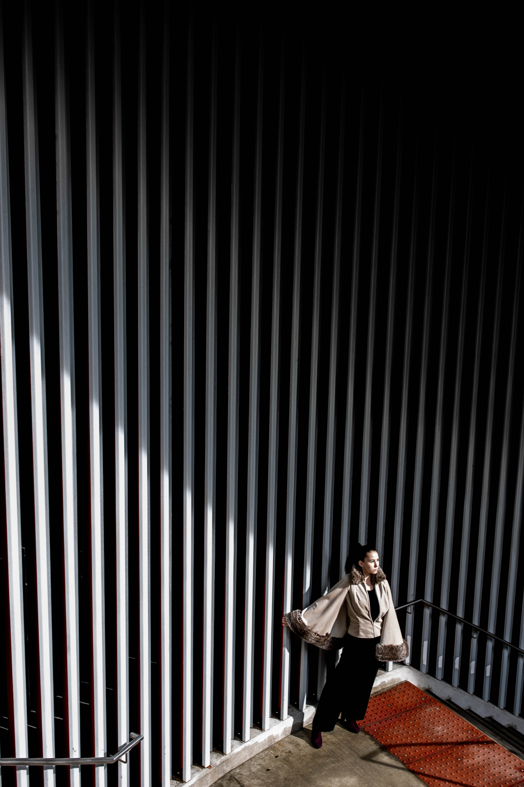

"Cice, 2020"
Digital Photography // 2020 // Chicago, Illinois
This photo was made to accompany my friend Cice's application portfolio for the fashion core program here at SAIC. She'd made this absolutely incredible cape out of boredom in the fall and wanted it to be featured as a portfolio piece. Of course, this means calling up your favorite photographer friend to make sure you can get some great shots to show it off. We had the shoot downtown and of course it was a lot of fun and I was still very stiff from not having a client-facing interaction in a long time. In the end though I ended up with a piece that I wanted in MY portfolio. You'd be surprised where your best work will come from.